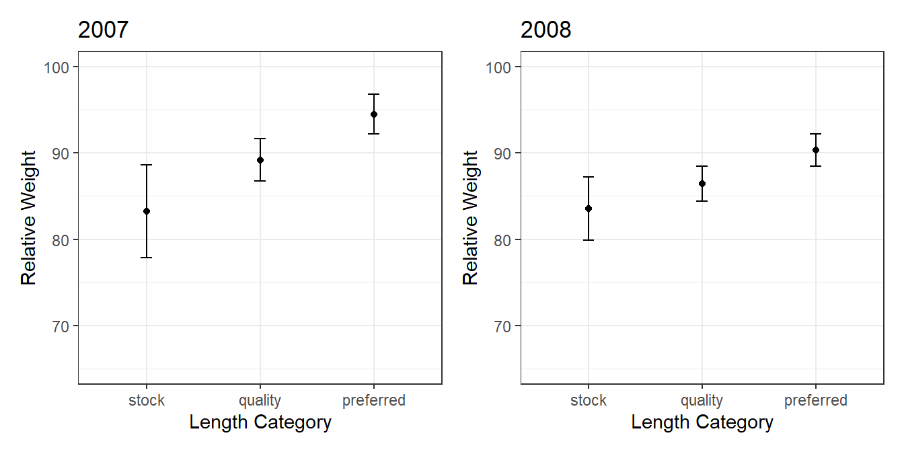

library(FSA)
library(tidyverse)
library(patchwork)
df <- read.csv("https://raw.githubusercontent.com/droglenc/FSAdata/master/data-raw/InchLake2.csv")
wsVal("Bluegill") species units type ref measure method min.TL int slope source
26 Bluegill metric linear 75 TL Other 80 -5.374 3.316 Hillman (1982)bg <- df %>%
filter(species=="Bluegill") %>%
mutate(length=length*25.4,
ws=10^(-5.374+3.316*log10(length)),
wr=weight/ws*100,
gcat=psdAdd(length,species="Bluegill")) %>%
filter(length>=80)
bg07 <- bg %>% filter(year==2007)
bg08 <- bg %>% filter(year==2008)
Summarize(wr~gcat,data=bg07,digits=1) gcat n mean sd min Q1 median Q3 max
1 stock 24 80.0 18.8 45.8 68.5 84.8 92.5 116.2
2 quality 38 89.8 7.5 71.2 85.0 90.9 95.3 101.6
3 preferred 21 96.3 5.0 88.3 92.0 97.3 99.7 103.4aov07 <- lm(wr~gcat,data=bg07)
anova(aov07)Analysis of Variance Table
Response: wr
Df Sum Sq Mean Sq F value Pr(>F)
gcat 2 3064 1532.00 11.425 4.319e-05
Residuals 80 10727 134.09 g07 <- ggplot(data=bg07,mapping=aes(x=gcat,y=wr)) +
stat_summary(fun=mean,geom="point") +
stat_summary(fun.data=mean_cl_normal,geom="errorbar",width=0.1) +
scale_x_discrete(name="Length Category") +
scale_y_continuous(name="Relative Weight",limits=c(65,100)) +
theme_bw() +
labs(title="2007")
Summarize(wr~gcat,data=bg08,digits=1) gcat n mean sd min Q1 median Q3 max
1 stock 24 72.7 16.8 43.5 55.1 78.2 86.0 96.8
2 quality 28 86.4 5.3 78.6 82.7 86.0 89.9 99.7
3 preferred 25 90.4 4.5 82.0 87.8 90.3 94.0 98.3aov08 <- lm(wr~gcat,data=bg08)
anova(aov08)Analysis of Variance Table
Response: wr
Df Sum Sq Mean Sq F value Pr(>F)
gcat 2 4223.8 2111.91 20.135 1.043e-07
Residuals 74 7761.7 104.89 g08 <- ggplot(data=bg08,mapping=aes(x=gcat,y=wr)) +
stat_summary(fun=mean,geom="point") +
stat_summary(fun.data=mean_cl_normal,geom="errorbar",width=0.1) +
scale_x_discrete(name="Length Category") +
scale_y_continuous(name="Relative Weight",limits=c(65,100)) +
theme_bw() +
labs(title="2008")
g07 + g08